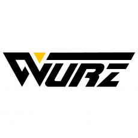

MITEX 2026 · Россия · Стенд 8В1702
МОСКОВСКИЙ БИТ
Карточка проверена 10 ноября 2026, 09:25 · Источник ↗ · Снимок оригинальной карточки ↗
О компании
Наш бренд предлагает Вашему вниманию биты для шуруповерта, пильные и алмазные диски, коронки и сверла, садовый инвентарь в ассортименте. Качество материалов и использование передовых технологий, обеспечивает нашей продукции высокую износостойкость и механическую прочность, что позволяет рекомендовать ее использование не только в быту, но и в профессиональной и промышленной области. Приглашаем к сотрудничеству торгующие организации и строительные компании.
Контакты
Все контактные сведения из карточки
Контакты Телефон: +74995025806 E-mail: wurz.pro@yandex.ru Адрес: Россия Веб-сайт: https://wurz.ru E-mail: wurz.pro@yandex.ru Телефон: +74995025806
Все рубрики участника
Mitex - Рубрикатор
- 2. Садовая техника, инструмент, инвентарь, оборудование, расходные материалы и насосы
- 5. Слесарный, монтажный, столярный, ручной инструмент
- 10. Алмазный, твердосплавный инструмент и оснастка
Зал
- Зал № 8
Участник выставки
- MITEX
Фотографии и изображения


Видео, каталоги и документы
В доступной карточке нет видео или документов. Смотрите сайт участника.